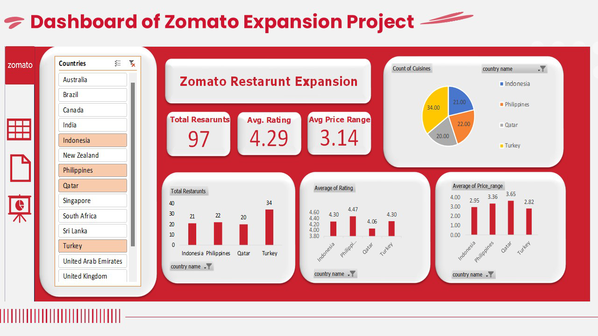
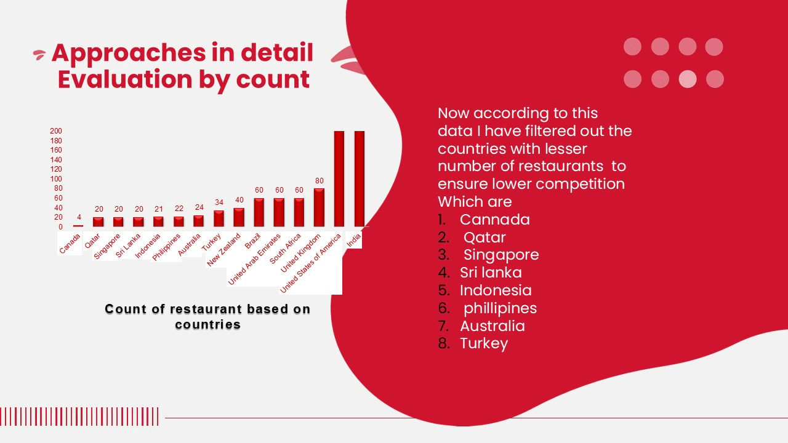
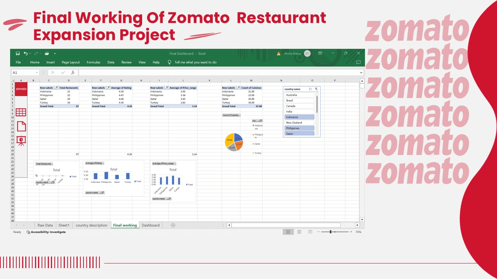

This project focuses on analyzing Zomato's restaurant data using Excel to identify optimal countries and cities for restaurant expansion.
Key factors such as restaurant counts, average ratings, cuisine types, and pricing structures were studied to formulate a data-driven expansion strategy.
Objective
To develop a comprehensive Excel dashboard that provides insights into market saturation, restaurant distribution, quality ratings, and recommends under-served high-potential markets for expansion.
Key Insights from Dashboard
- Restaurant Counts: Turkey has the highest number of restaurants among selected countries, followed by the Philippines and Indonesia.
- Ratings Analysis: Philippines and Indonesia have the highest average restaurant ratings, indicating favorable customer satisfaction.
- Price Range Analysis: Qatar shows the highest average price range among the compared countries, suggesting premium positioning in that market.
- Cuisine Distribution: Cuisines are most diverse in Turkey, offering expansion opportunities with varied menu options.
- Market Size: With a total of 97 restaurants across all selected countries and an average rating of 4.29, the overall market conditions are favorable for strategic expansion moves.
Expansion Recommendations
- Top Countries to Target: Philippines and Indonesia for quality-focused expansion; Qatar for premium market positioning; Turkey for volume-driven strategy.
- Service Strategy: Focus on maintaining high customer ratings by ensuring food quality and service excellence, especially in emerging markets.
- Cuisine Strategy: Customize offerings according to popular local tastes while introducing trending cuisines to diversify menus.
Project Approach
- Data cleaning, country code mapping, and preparation using Excel functions.
- Created Pivot Tables and Pivot Charts to analyze various parameters: ratings, restaurant count, cuisine distribution, and pricing.
- Used slicers for country-wise dynamic filtering to make the dashboard interactive.
- Designed the dashboard to highlight key performance indicators (KPIs) and actionable insights visually.

Main Zomato Expansion Dashboard: A dynamic visual analysis of restaurant distribution, ratings, price range, and cuisine diversity across selected countries.

Restaurant Evaluation: Identifying countries like Qatar, Philippines, and Turkey with high potential for new restaurant openings based on market gaps.

Final Dashboard Overview: Consolidating all insights into a strategic recommendation framework for Zomato's future expansion decisions.